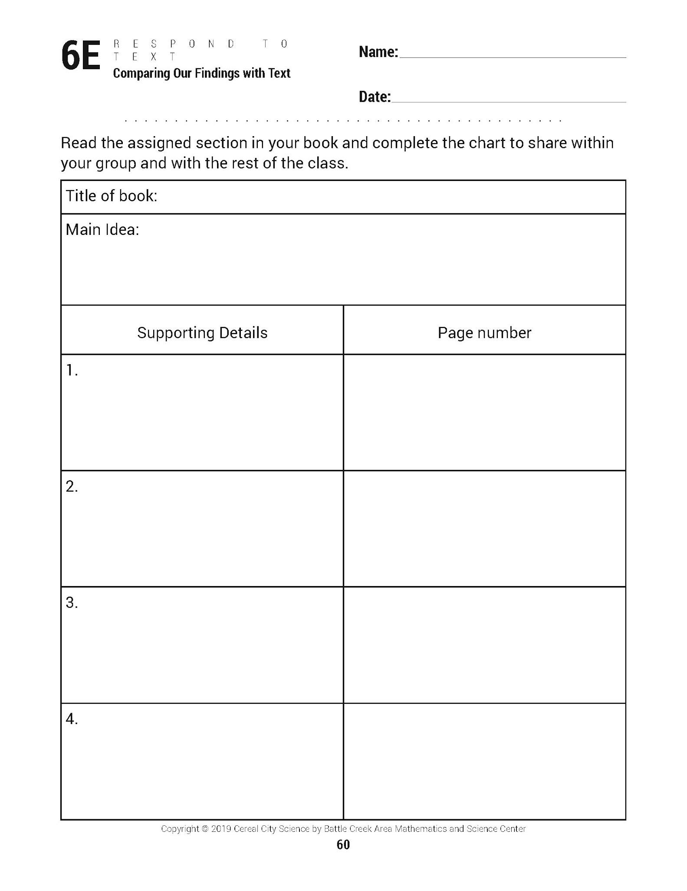

Read the assigned section in your book and complete the chart to share within your group and with the rest of the class.
Title of book: ______________________________
Main Idea: ______________________________
| Supporting Details | Page number |
|---|---|
Student journal pages 60–60 • Select a page below to read its editable text.
Read the assigned section in your book and complete the chart to share within your group and with the rest of the class.
Title of book: ______________________________
Main Idea: ______________________________
| Supporting Details | Page number |
|---|---|
This is the unmarked scanned page for checking original diagrams, exact wording, or layout. The editable HTML content is above.
